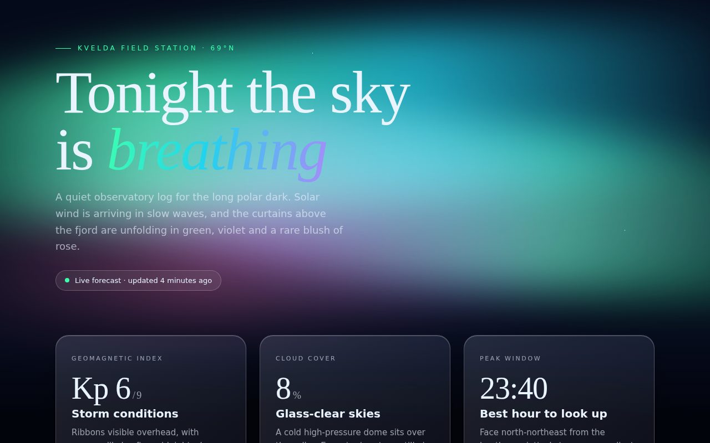

001
Aurora Glass
A calm, premium night-sky landing page for an imaginary Arctic observatory. Slow aurora ribbons drift behind a starfield and a silhouetted ridge, while frosted glass cards float in front, catching the light. The serif headline with its gradient italic word sets an editorial, luxurious tone, and the cards present the night's forecast with large numerals and soft gradient meters.
Original prompt
Build a single standalone HTML page called "Aurora Glass" for a fictional polar observatory, the Kvelda Field Station at 69°N. The background is a deep night gradient (#050a1a fading up from #0b1a3a at the bottom) with a fixed sky layer: a field of tiny radial-gradient stars that slowly twinkle, three huge blurred (48px) aurora ribbons built from horizontal linear gradients in mint green #3dffb0, teal #22d3ee, violet #a78bfa and rose #f472b6, blended with mix-blend-mode: screen, each drifting, rotating and stretching vertically on its own 22 to 34 second keyframe loop. A black inline-SVG mountain ridge and a dark fade sit along the bottom edge. Typography pairs "Iowan Old Style"/Palatino/Georgia for the display serif with "Avenir Next"/Segoe UI/Helvetica Neue for body. The hero has a green uppercase eyebrow with a leading hairline, a large serif headline "Tonight the sky is breathing" where "breathing" is italic with a green-teal-violet gradient clip, a muted lede paragraph, and a frosted pill status badge with a pulsing green dot. Below sits a responsive auto-fit grid of three frosted glass cards (backdrop-filter blur 22px with saturation, 1px translucent border, inner highlight, deep shadow, 24px radius) showing the geomagnetic Kp index, cloud cover and peak viewing window, each with a big serif numeral, a short heading and copy, plus a gradient meter that fills on load or a chip. Interaction: on pointer move each card tilts in 3D (up to about 7 to 8 degrees, perspective 1100px, inner content translated in Z by 40px) and a radial white glare follows the pointer using overlay blend; on leave the card springs back with an expo-out ease. Cards are focusable with a mint focus ring. Under prefers-reduced-motion the ribbons, twinkle, pulse and meter animations stop and the tilt is disabled, while the glare still tracks. No external resources.